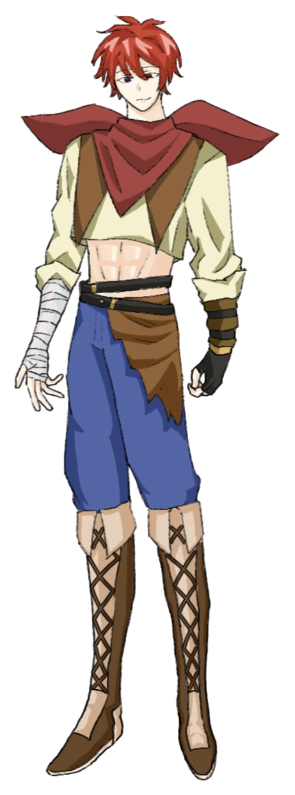

PROLOGUE / MAIN PLOT
從第一枚冒險者徽章開始
身分特殊的莫谷，直到通過冒險者協會測驗後，才獲准離開叢菌森林。 他與長年照顧自己的鄰居火箭筒前往主城奇拉爾，途中因一袋豆腐認識玄玉， 又在第一份委託中遇見靳，最後於教廷迎來魚有魚。
看似普通的史萊姆清理任務，卻牽出遭人重新啟動的聚魔陣、失落的貝殼項鍊， 以及火箭筒與教廷之間未說出口的舊識。五名旅人尚未真正理解彼此， 便已站在更大事件的入口。
ORIGINAL FANTASY ARCHIVE · VOL.01
STORY & CHARACTER SETTING BOOK
一名渴望冒險的神奇菌類、一位不願透露過去的千年龍族， 加上追尋前緣的狐妖、背負詛咒的遊俠與寡言的牧師。 五人從一份清理史萊姆的委託開始，逐步走進被改寫的陣法與未明的陰影。

STORY ARCHIVE
PROLOGUE / MAIN PLOT
身分特殊的莫谷，直到通過冒險者協會測驗後，才獲准離開叢菌森林。 他與長年照顧自己的鄰居火箭筒前往主城奇拉爾，途中因一袋豆腐認識玄玉， 又在第一份委託中遇見靳，最後於教廷迎來魚有魚。
看似普通的史萊姆清理任務，卻牽出遭人重新啟動的聚魔陣、失落的貝殼項鍊， 以及火箭筒與教廷之間未說出口的舊識。五名旅人尚未真正理解彼此， 便已站在更大事件的入口。
CHARACTER INDEX
沒有符合條件的角色。
CHARACTER FILES
ARCHIVE NO. 01
PERSONAL STORY
WEAPON FILE
ABILITY DISTRIBUTION
CLASSIFIED
此頁已封印
RELATION MAP
CHAPTER INDEX
點選任一章節，即可閱覽
CHAPTER 01